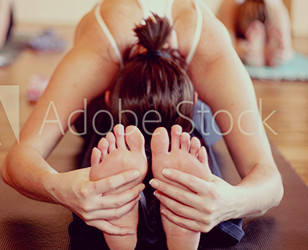
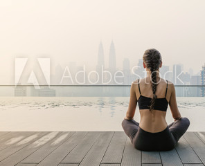

オフィス向け福利厚生ヨガで、
社員のライフスタイルをより良くする。
他社テキストコピーです。企業が社員の健康・美容をサポートすることは、社員のライフスタイルをより良くし、活き活きとした企業活力の醸成につながると言えます。
福利厚生を目的として、心身ともに健康に寄与する「ヨガ」を検討されている企業向けに、社員様が一般会員様より安い価格でヨガエステに通うことができる法人会員制度を整えております。
ヨガステは、企業が社員のヘルスケアに寄り添うためのツールとしてお役にたちたいと思っております。他社テキストコピーです。
ヨガの身体的効果
ストレッチ効果があり、体の柔軟性を高め、また腹筋を鍛えるといったしなやかな筋肉を生み出します。ヨガを継続することで食事に対して意識を持つようになる方が多くいます。そのため間接的ですがダイエット効果も期待他社他社コピペです。
ヨガの精神的効果
深くゆっくりとした腹式呼吸は副交感神経を優位にし、早く浅い呼吸は交感神経を優位にします。この自律神経のバランスを調整するのがヨガ呼吸法です。自律神経の調子を整えることで、リラクゼーション効果、ストレス低減効果を他社コピペです。
自己の内観
姿勢が整い、マインドに落ち着きを取り戻せたら、瞑想で自分と対話する段階に入っていきます。普段の喧騒から離れ、自分の本当に欲することを探ります。自己の内観はヨガの目的の一つです。これは自分探しの旅ともいえるえしょう。他社コピペ。
講師紹介
守屋 亜紀
資格所得
インテグラルビューティー公認ヨーガインストラクター
経歴
数年前に体調を崩し東洋医学の治療を受け、その先生からヨーガを紹介されたのがヨーガとの出会い。
ヨーガに触れる度に好きになっていく、そんなヨーガの魅力を一人でも多くの人に伝えていきたいと思い、インテグラルビューティー主催のインストラクター養成コースを受講。
成瀬貴良講師に師事。同年ヨーガの聖地リシケーシを訪れる。
各企業への指導経験がある他、現在も公共施設や横浜のスタジオでクラスを受け持っている。
再びヨーガ修行のためインドリケーシに渡り、２００８年１月より始まった成瀬貴良講師主催のTHE YOGA LIFE SOCIETYの活動のサポートにも携わる。サンプル
メッセージ
最近、「なんか疲れる～」「なんかだるい～」そんな身体の声を感じていませんか？
その「なんか～」が『なんか気持ちいい』 に変わったらいいですよね・・・その身体の声をヨガで聞いてみませんか！！
身体が硬い、ヨガ経験がない等全く関係ありません。
一番大切なのは、自分の身体と素直に向き合いそして長く、優しく見守ってあげられる心の準備をすることです。
さぁ一緒に心地いい時間を過ごしませんか。サンプル